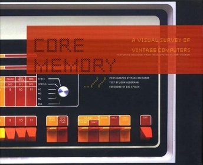
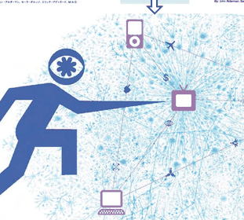
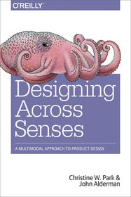
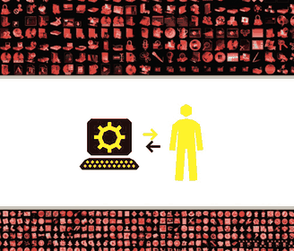

John Alderman — Writer and Experience Strategist
Frame
Half-recognized intuitions don't become useful on their own. Someone has to help develop them into ideas that can hold together under pressure.
Artifact · 1998–2024
Sonic Boom
Written while the music industry was still trying to stop what was already happening. One of the first attempts to name the shape of a disruption before it had settled. New York Times Notable Book.

Core Memory
Before computing disappeared into seamless interfaces, this book made its history physical again. Fifty computers photographed by Mark Richards. Design Observer Book of the Year.

Exploding TV
A framework for forces that were only beginning to reshape video culture. Named nine properties of something that wouldn't fully exist for another five years.

Designing Across Senses
Computing was escaping the screen, but design methods had not yet caught up. This book built the frameworks for thinking across senses, environments, and embodied interaction.

Dix Réflexions sur l'Interface Graphique
Ten reflections on the graphical interface at the moment it became the primary environment of human life. Written in French design press, with Erik Adigard. Published before the observation was commonplace.
Dieter Rams: Making Systems and Making Sense
A critical review of the Rams retrospective at SFMOMA that reframes him as a systems designer as much as a functionalist. Setting the standard for what becomes normal and intuitive is a position of responsibility.
Future Signals
At a time when the dystopic seems to be the only available mode, a broader tool and practice for imagining change and how it happens.
Signal · ongoing
We seem to be living with more kinds of intelligence each day. Which ones matter, and for what?
Attention has qualities. Which ones matter? Which hold possibility? Which are under threat?
When do we need to demonstrate good intentions before we assume them?
Something psychedelic has entered the atmosphere. Has it become inescapable?
Imagination is a thinking discipline. Why is it too often left out?
Design solves for efficiency. Art solves for effectiveness. Why do most organizations hire for the first when they desperately need the second?
How do we create conditions under which the best thinking can happen?